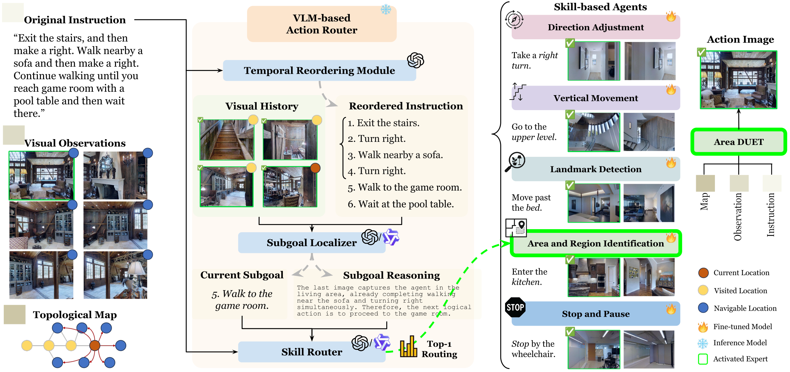
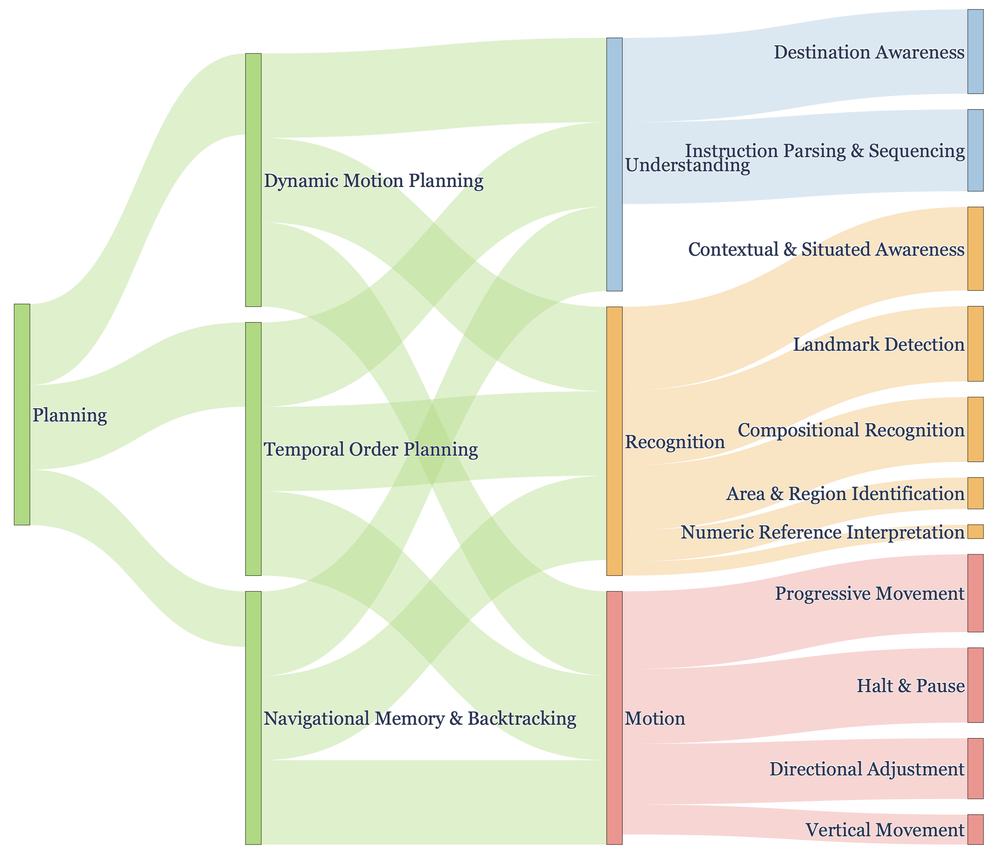
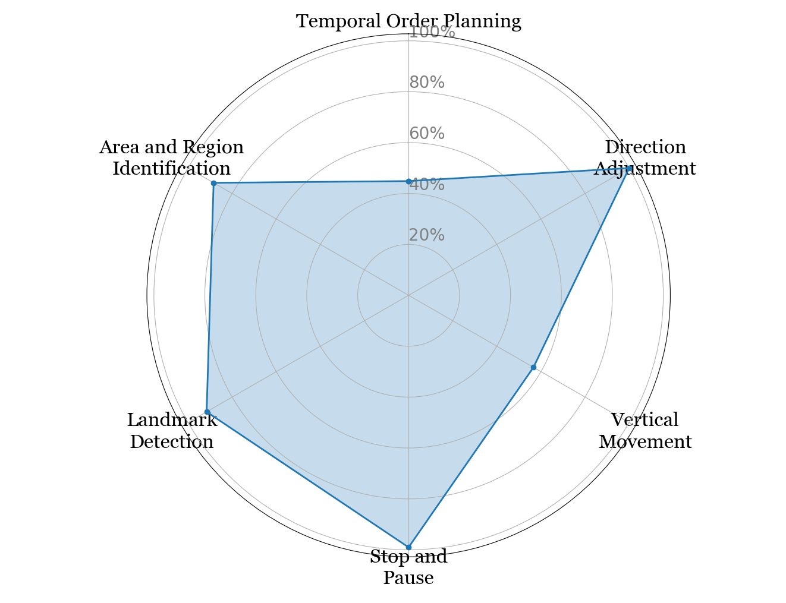
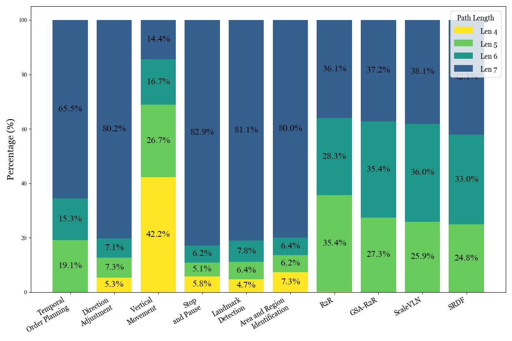
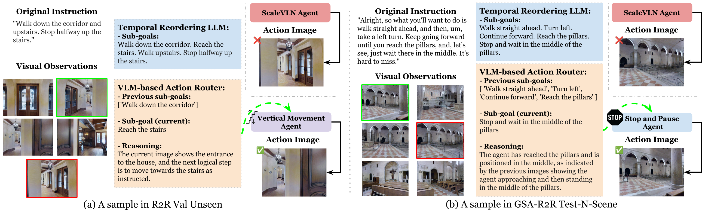
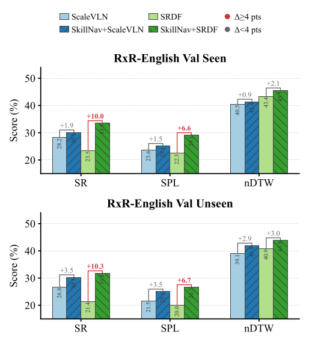

Tianyi Ma1, Yue Zhang1, Zehao Wang2, Parisa Kordjamshidi1
1Michigan State University · 2ESAT-PSI, KU Leuven
Accepted to ACL 2026 (Oral)
Vision-and-Language Navigation (VLN) poses significant challenges for agents to interpret natural language instructions and navigate complex 3D environments. While recent progress has been driven by large-scale pre-training and data augmentation, current methods still struggle to generalize to unseen scenarios, particularly when complex spatial and temporal reasoning is required. In this work, we propose SkillNav, a modular framework that introduces structured, skill-based reasoning into Transformer-based VLN agents. Our method decomposes navigation into a set of interpretable atomic skills (e.g., Vertical Movement, Area and Region Identification, Stop and Pause), each handled by a specialized agent. To support targeted skill training without manual annotation, we construct a synthetic dataset pipeline that generates diverse, linguistically natural, skill-specific instruction-trajectory pairs. We then introduce a novel training-free Vision-Language Model (VLM)-based router, which dynamically selects the most suitable agent at each time step by aligning sub-goals with visual observations and previous actions. SkillNav obtains competitive results on commonly used benchmarks and establishes state-of-the-art generalization on GSA-R2R, a benchmark with novel instruction styles and unseen environments.




| Methods | # | R2R | GSA-R2R | ||||||||||||
|---|---|---|---|---|---|---|---|---|---|---|---|---|---|---|---|
| Val-Unseen | Test-Unseen | Test-R-Basic | Test-N-Basic | Test-N-Scene | |||||||||||
| NE↓ | OSR↑ | SR↑ | SPL↑ | NE↓ | OSR↑ | SR↑ | SPL↑ | SR↑ | SPL↑ | SR↑ | SPL↑ | SR↑ | SPL↑ | ||
| LLM-based VLN | |||||||||||||||
| MapGPT (GPT-4v) | 1 | 5.63 | 58 | 44 | 35 | -- | -- | -- | -- | 34 | 30 | 25 | 23 | 25 | 23 |
| NavCoT (LLaMA2) | 2 | 6.26 | 42 | 34 | 29 | -- | -- | -- | -- | 37 | 35 | 29 | 26 | 29 | 26 |
| NavGPT-2 (FlanT5-5B) | 3 | 3.13 | 81 | 72 | 61 | 3.33 | 80 | 72 | 60 | 58 | 45 | 48 | 35 | 57 | 43 |
| NaviLLM (Vicuna-7B) | 4 | 3.51 | -- | 67 | 59 | 3.71 | -- | 68 | 60 | -- | -- | -- | -- | -- | -- |
| DiscussNav (GPT-4) | 5 | 5.32 | 61 | 43 | 40 | -- | -- | -- | -- | -- | -- | -- | -- | -- | -- |
| Supervised VLN | |||||||||||||||
| HAMT | 6 | 2.29 | -- | 66 | 61 | 3.93 | 72 | 65 | 60 | 48 | 44 | 42 | 38 | 34 | 30 |
| DUET | 7 | 3.31 | 81 | 72 | 60 | 3.65 | 76 | 69 | 59 | 58 | 47 | 48 | 37 | 40 | 30 |
| BEVBERT | 8 | 2.81 | 84 | 75 | 64 | 3.13 | 81 | 73 | 62 | 58 | 45 | 46 | 35 | 39 | 27 |
| GR-DUET | 9 | -- | -- | -- | -- | -- | -- | -- | -- | 69 | 64 | 57 | 52 | 48 | 43 |
| SAME† | 10 | 2.73 | -- | 76 | 66 | 3.03 | -- | 74 | 64 | -- | -- | -- | -- | -- | -- |
| ScaleVLN† | 11 | 2.39 | 88 | 79 | 70 | 2.73 | 84 | 77 | 68 | 78 | 67 | 69 | 57 | 55 | 43 |
| SRDF† | 12 | 1.83 | 89 | 84 | 78 | 1.88 | 88 | 84 | 77 | 71 | 63 | 59 | 49 | 52 | 43 |
| Mixture of Skill-based VLN (Ours) | |||||||||||||||
| SkillNav (ScaleVLN-Aug)† | 13 | 1.97 | 89 | 83 | 77 | 2.53 | 83 | 78 | 70 | 79 | 69 | 72 | 61 | 57 | 48 |
| Δ vs. ScaleVLN | −0.42 | +1.77 | +3.36 | +6.54 | −0.20 | −1.65 | +0.88 | +1.80 | +0.71 | +2.18 | +2.45 | +4.18 | +2.16 | +5.26 | |
| SkillNav (SRDF-Aug)† | 14 | 1.79 | 89 | 84 | 78 | 1.76 | 87 | 84 | 77 | 71 | 64 | 61 | 50 | 54 | 45 |
| Δ vs. SRDF | −0.04 | −0.26 | +0.20 | +0.22 | −0.12 | −0.82 | −0.28 | +0.09 | +0.56 | +1.02 | +2.83 | +0.87 | +2.78 | +2.02 | |
† large-scale data augmentation. Bold = best, underline = second-best per column. For NE, − means lower (better). SkillNav (ScaleVLN-Aug) sets the new SOTA on every GSA-R2R split; SkillNav (SRDF-Aug) further pushes the R2R bound while remaining competitive on GSA-R2R.
| Method | DC | VM | LR | RR | ||||
|---|---|---|---|---|---|---|---|---|
| SR | SR | OSR | SPL | SR | SR | OSR | ||
| VLN Agents | ScaleVLN | 68.39 | 81.76 | 88.82 | 76.34 | 28.32 | 82.91 | 95.27 |
| SRDF | 59.93 | 82.94 | 91.18 | 80.98 | 26.28 | 77.09 | 94.55 | |
| Mixed Skills | 66.84 | 84.11 | 87.65 | 79.22 | 48.90 | 81.82 | 90.91 | |
| Skill-based Agents (Ours) | Directional Adjustment (DA) | 70.81 | 81.76 | 91.18 | 76.28 | 31.39 | 81.82 | 94.91 |
| Vertical Movement (VM) | 70.68 | 87.65 | 89.41 | 83.83 | 30.22 | 82.18 | 96.00 | |
| Landmark Detection (LD) | 70.29 | 82.35 | 85.29 | 78.94 | 31.53 | 83.64 | 97.09 | |
| Area & Region Ident. (AR) | 67.53 | 84.12 | 88.82 | 80.49 | 29.20 | 85.09 | 96.36 | |
| Stop & Pause (SP) | 68.91 | 84.71 | 87.06 | 80.67 | 29.78 | 83.64 | 97.09 | |
Each skill agent excels in its own skill domain. DC = Direction Change, VM = Vertical Movement, LR = Landmark Recognition, RR = Region Recognition. Following NavNuances, metric sets differ across splits.
| Reorder | Router | Test-R-Basic | Test-N-Basic | Test-N-Scene | |||
|---|---|---|---|---|---|---|---|
| SR | SPL | SR | SPL | SR | SPL | ||
| ✗ | Qwen | 78.42 | 67.80 | 71.01 | 59.62 | 55.46 | 45.43 |
| ✓ | Qwen | 78.83 | 68.88 | 71.58 | 61.34 | 56.66 | 47.96 |
| ✗ | GLM | 77.46 | 66.27 | 70.70 | 58.63 | 55.62 | 42.64 |
| ✓ | GLM | 78.60 | 67.93 | 71.13 | 59.73 | 56.80 | 46.51 |
Disabling Temporal Reordering hurts every split by ~1–2.5 SPL points — explicit decomposition is a structural scaffold for generalization, not optional.
| Router | Test-R-Basic | Test-N-Basic | Test-N-Scene | |||
|---|---|---|---|---|---|---|
| SR | SPL | SR | SPL | SR | SPL | |
| Random | 78.39 | 67.46 | 70.93 | 59.71 | 54.61 | 43.17 |
| GLM-4.1V-9B | 78.60 | 67.93 | 71.13 | 59.73 | 56.80 | 46.51 |
| Qwen2.5-VL-7B | 78.83 | 68.88 | 71.58 | 61.34 | 56.66 | 47.96 |
| GPT-4o | 79.41 | 69.18 | 72.75 | 62.48 | 58.16 | 48.96 |
With temporal reordering enabled, performance is robust across router VLMs; GPT-4o adds another ~1 SPL on the hardest Test-N-Scene split.
| πSP | πDA | πAR | πLD | πVM |
|---|---|---|---|---|
| 34.42% | 23.61% | 18.75% | 14.23% | 8.99% |
Control-focused skills (SP + DA) dominate (~58%); semantic skills (AR, LD) act as sparse anchors; VM is the rarest, matching topological sparsity of stairs/elevators in MP3D.
| Method | Split | Runtime (s) | Inferences/s |
|---|---|---|---|
| ScaleVLN | Test-R-Basic | 513.8 | 28.03 |
| Test-N-Basic | 342.7 | 26.26 | |
| MapGPT | Test-R-Basic | ~597,000 | 0.02 |
| Test-N-Basic | ~373,000 | 0.02 | |
| SkillNav (Qwen) | Test-R-Basic | ~27,000 | 0.54 |
| Test-N-Basic | ~18,360 | 0.49 |
SkillNav sits between fast supervised baselines and LLM-only agents: ~25× faster than MapGPT while gaining substantial generalization on GSA-R2R.


@misc{ma2025breakingbuildingupmixture,
title = {Breaking Down and Building Up: Mixture of Skill-Based Vision-and-Language Navigation Agents},
author = {Tianyi Ma and Yue Zhang and Zehao Wang and Parisa Kordjamshidi},
year = {2025},
eprint = {2508.07642},
archivePrefix = {arXiv},
primaryClass = {cs.AI},
url = {https://arxiv.org/abs/2508.07642}
}